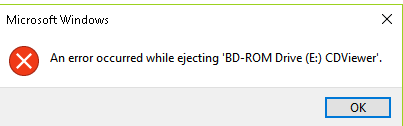

有一天我要备份资料，想说烧到光碟片里面保存比较安全，当我备份结束，光碟烧好之后，我习惯会把备份的光碟再放进光碟机一次，确认资料都有正确烧进去，最后按光碟机退出键想把光碟收在柜子里，但光碟机一点反应也没有，无法正常的退出。
接著我改用软方式，打开档案总管，对萤幕光碟机图示按右键，点击退出 (eject)，但光碟机一样没有反应，还跳出一个错误视窗。
我猜可能是 Windows Explorer 正在读取该光碟机的内容，所以禁止我将光碟退出，於是我决定重启 Windows Explorer 程序。
重启 Explorer 方式很简单， 先打开工作管理员，找到 Windows Explorer ，点一下它，然后再按最右下角的 restart (重启)，系统就会重新开启 Windows Explorer 。

重启结束后，再按一次光碟退出钮，得到一样的结果，光碟机仍然没有反应。
关掉 Antimalware

检视工作管理员里面的程序，发现有一个程序叫 Anitmalware ，这个程序看名字就知道是一个检查系统是否有病毒/木马的工具，我看这个程序使用了 17.4% 的 CPU ，代表它正在工作中，通常这种软体都会扫描你正在使用的所有档案，光碟机里的内容也有可能正在被 Anitmalware 扫描中，才造成光碟机无法退出的现象，如果档案正在使用中当然不能退出，一旦退出导致系统找不到档案，有可能会当机。
如果我们想从"工作管理员"，来直接关闭 Antimalware Service 是行不通的，微软的设计不让我们这么干，而且这个关闭方式太爆力，系统无法承受。
在 Windows 右下角有个向上箭头，点它一下会出现目前执行中的程序，其中有一个长得像盾牌的图示就是 Antimalware ，点击后就会打开 Antimalware 介面，介面最上向就会显示 PC status : Protected ，代表 Antimalware 会自动帮你扫毒，看下图示，打开 Antimalware 之后，点一下右上角的"设定"(Settings)，就会打开 Windows Defender Settings 介面。

看下图示， Windows Defender 有个选项叫 Real-time protection ，这就是即时扫毒的开关，点一下开关就能把他关闭，关闭之后再重新按一次光碟机的退出钮，光碟就成功退出来啦。

Real-time protection 下有个说明，表示 Antimalware 就算被关闭，它也会在某一个时机再自动重新启动，所以我们下次还是有机会再碰到这个问题，因为 Antimalware 又自已复活了。